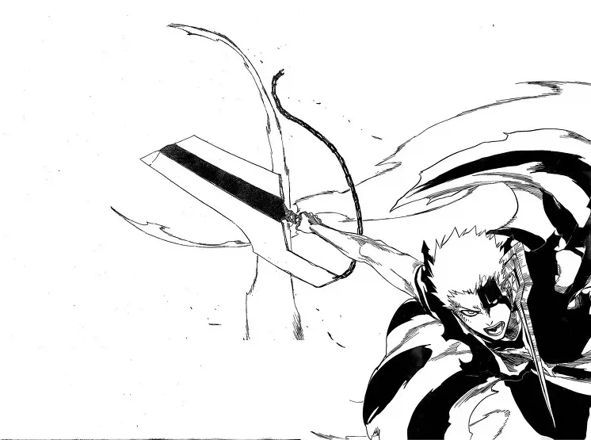
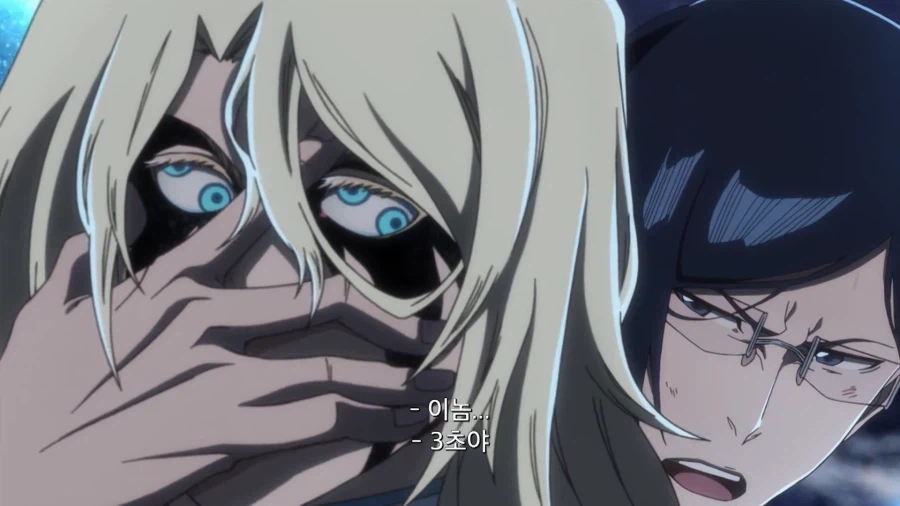
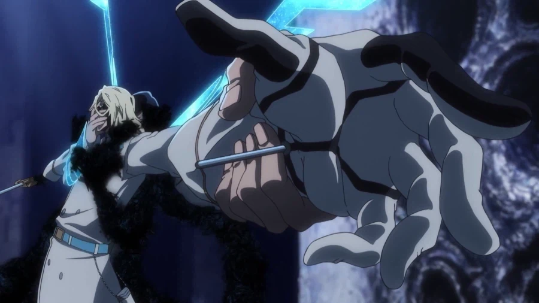
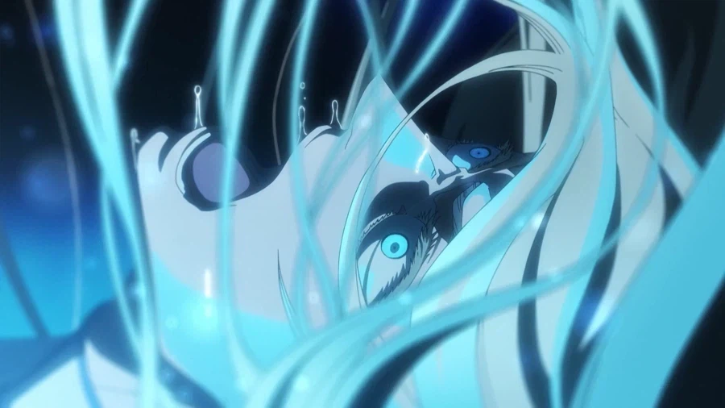
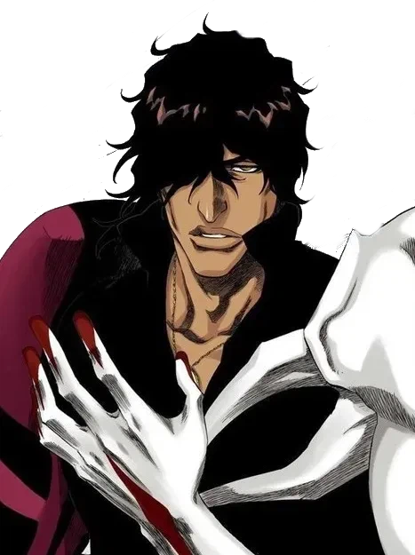
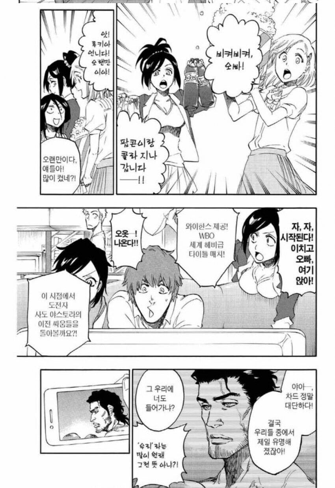

이치고
만화책은 칼뽀각 + 끝났다 만 나왔는데
애니에서는 왜 부러트렸는지 제대로 묘사해줌

오리히메
독자들이 완결 후 IF떡밥 굴리면서 놀던 살의를 품은 오리히메가 진짜로 나왔고
야마모토가 흠집도 못낸 유하바하 영자검 박살내고 자폭이 가능할정도로 강한게 나옴



우류
만화책에서는 안티서시스도 몇번 안나왔고, 안티서시스 빼면 존나 약한 거 아님? 소리가 나왔는데,
애니에서는 순수 체급 개높음 + 지능 개높음 + 능력 개사기 로 변함
우류, 오리히메 둘 다 야마모토나 만해 켄파치정도는 가지고 노는 수준으로 변했음

차드

엔딩후 몇년 고생하면 복싱챔피언이 될수도 있는 능력을 가짐
병신
댓글
수집 당시 댓글 7개
약붕이 · 1 일 전
역시 기가차드 ㄷㄷ
라키쿠케코 · 1 일 전
기가차듴ㅋㅋㅋ
나메크인. · 1 일 전
0번대 만해도 상상보다 잘나와서 좋았음
오타협회장 · 1 일 전
총대장 할배 만해 방향별로 다른게 개멋잇엇음
이게나야 · 1 일 전
오리히메 전투씬은 감동이 있네...
딤송빠레 · 1 일 전
자 이제 누가 '공식'이지??
낌끼유 · 22 시간 전
오리히메 '죽일각오' ㄷㄷ